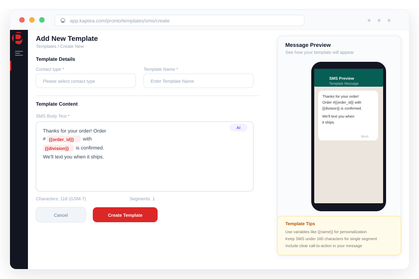

When messaging happens across hundreds of teams, someone needs to be in control.
Distributed organisations need local teams to communicate — but without guardrails, that creates brand risk, compliance exposure, and zero visibility for the centre. Pronto gives local teams the autonomy to communicate, and central teams the control to govern every send.

Any organisation with multiple teams, locations, or divisions sending messages to customers needs a governance model — not just a platform.
Store & Depot Networks
Hundreds of locations sending local customer comms with no central visibility or brand enforcement
Multi-Brand Financial Groups
Retail banking, wealth, insurance, and broker brands sharing infrastructure with strict data separation
Field & Regional Operations
Field teams, regional offices, and customer operations each communicating without unified governance
Government Departments
Multiple agencies and departments communicating with citizens under compliance and audit requirements
Passenger & Operational Teams
Passenger-facing comms and operational dispatch running through separate teams on separate tools
Why distributed messaging without governance creates serious risk
Central teams have no visibility into what's being sent
When local teams — depot managers, regional advisors, branch staff — communicate with customers through their own tools or accounts, the centre is blind. There's no record of what was sent, to whom, when, or on which channel. The first time a compliance question or customer complaint arises, there's no data to answer it.
Off-brand and non-compliant messages go out unchecked
Without template controls and approval workflows, local teams write their own messages. Tone is inconsistent, legal disclaimers are missing, regulated language requirements aren't met. In financial services and public sector organisations, a single non-compliant message can create significant regulatory exposure. In retail, it erodes brand equity that took years to build.
Transactional messaging requires central team bottleneck
Every order confirmation, appointment reminder, or account notification that requires a local or event-triggered send creates a dependency on the central marketing or communications team. At scale — hundreds of locations, thousands of events per day — this bottleneck is unsustainable. Local teams wait, messages go out late, and the central team is buried in low-value operational work that should be automated.
Audit trails are incomplete or don't exist
Regulators, legal teams, and compliance functions increasingly require evidence of what was communicated, to whom, and when. When messaging is distributed across dozens of tools and dozens of teams, assembling that evidence takes days and is often incomplete. For regulated industries — financial services, healthcare, public sector — this isn't an administrative problem. It's a material compliance risk.
How Kaptea Pronto gives distributed organisations control without adding friction
"We have operations teams, customer services, and field engineers — all communicating with the same customers through different tools, with different tones, different channels, and no idea what the others are sending. It's chaos and it's a compliance liability."
One platform, structured by division — with roles enforced at every level
Pronto's division model mirrors your organisational structure inside the platform. Each business unit, brand, region, store, or depot operates as its own division — with its own contacts, templates, channels, and reporting. Users are assigned roles within divisions: SuperAdmins with full oversight, Admins who manage their division, Advisors who send within approved guardrails, and Ambassadors with restricted access. A user in one division cannot see another division's data. Central teams have cross-division visibility. SSO integration means access is managed through your existing identity provider.
- Division segmentation — separate data, templates, and reporting per unit
- Configurable role hierarchy — SuperAdmin, Admin, Advisor, Ambassador
- Per-user, per-division role assignment — one person, multiple roles
- SSO integration — manage access through your identity provider
"One of our regional managers sent a customer communication that used completely wrong language — no legal disclaimer, wrong tone, wrong channel. We had no way to stop it before it went out and no record of it afterwards. That can't happen again."
Brand-safe templates with central approval — enforced, not optional
Pronto's template management gives central teams complete control over what local teams can send. Templates are created centrally and go through a structured approval workflow before being published to divisions. Once live, certain fields are locked — legal text, sender identity, regulated wording — while others can be personalised within defined limits. Local teams can only send approved templates. They cannot create or send anything outside them. Every template version, approval, rejection, and change is recorded in a full audit trail.
- Centralised template creation with draft → review → approve → publish workflow
- Locked and editable fields — compliance-critical content can't be changed locally
- Division-level template assignment — each division sees only what's relevant
- Full template version history with approver identity and timestamp
"Every transactional notification — order ready, appointment confirmed, account updated — needs someone to manually set up a campaign. We have hundreds of these a day across all our locations. It's all going through the central marketing team and it's completely unsustainable."
CRM-triggered automation that removes the central bottleneck
Pronto integrates with Salesforce, Microsoft Dynamics 365, and specialist platforms via REST API. Events in your source systems — a contact status change, an appointment confirmation, an order update, a renewal — trigger automated sends against pre-approved templates within the relevant division's guardrails. Local teams don't need to log in. Central teams don't need to set up campaigns. The automation is configured once and runs at scale, with every send logged and every delivery tracked.
- Native integration with Salesforce, Dynamics 365, and operational platforms
- Event-driven automation — trigger on CRM or system events, not manual sends
- Runs within division guardrails — approved templates, permitted channels only
- Per-send audit log — sender identity, template version, delivery status
"When our regulator asked us to evidence what communications went to a specific group of customers over a three-month period, it took us two weeks to compile an incomplete picture from five different systems. We need a single, complete record from the moment a message is sent."
Complete audit trail — from send to delivery, across every division
Every message sent through Pronto is logged with the sender identity, division, timestamp, template version, channel, and per-recipient delivery status. Template change records — including who approved, who rejected, and every comment in between — are captured alongside the message logs. Audit data is exportable as CSV for regulatory submissions, legal requests, or internal compliance reporting. Cost-aware routing optimises channel selection to reduce delivery cost without compromising on reliability or auditability.
- Per-message audit record — sender, division, timestamp, template version, delivery status
- Template approval audit — every version, approver, rejection, and comment
- Cross-division reporting for central compliance teams
- Cost-aware routing — optimised channel selection without sacrificing governance
900+
Locations managed from a single Pronto instance with full division-level governance
100%
Brand-safe send compliance — local teams can only send approved templates
Zero
Central team bottleneck for CRM-triggered transactional messaging once configured
Days
Typical time from contract to a fully configured, governed Pronto instance
"We needed a single platform that could handle communications across our entire depot network — consistent, brand-safe, and without every message needing to come through central marketing. Pronto gave us the governance model to let depots communicate locally while we retained full visibility and control from the centre. The scale it runs at just isn't something we could have achieved with our previous provider."
Head of Digital Operations
National trade merchant — 900+ depot network, Retail & Distribution
900+
Trade depots communicating with customers from one governed platform
Single
Instance managing all depot divisions, templates, and channels centrally
100%
Template compliance enforced — no depot can send outside approved content
Days
From contract to live, fully configured deployment at national scale
Why enterprises trust Kaptea with distributed governance
"Pronto gives us the red button. If something goes wrong, we can shut everything down instantly — across every channel, every template. That level of control matters when you're sending on behalf of a national brand."
"Everything is standardised but still customised. Every team lifts the quality of their communications because the guardrails are there — but the creativity isn't taken away."
"We send over a million emails in a single campaign and maintain a 99% sender reputation. That doesn't happen by accident — it happens because the platform enforces the standards we need."
Industries that rely on distributed governance
Wherever messaging is sent by multiple teams, locations, or divisions — and where compliance, brand consistency, or data separation matter — the governance model is the platform.
Retail & Ecommerce
900-location depot networks, store communications, and CRM-triggered transactional messaging — all governed from one platform.
See the solution →Financial Services
Multi-brand financial groups with strict data separation between retail banking, wealth, insurance, and broker divisions.
See the solution →Utilities & Energy
Field operations, customer services, and emergency comms teams all communicating through one governed, auditable platform.
See the solution →Public Sector
Government departments and agencies communicating with citizens under compliance, audit, and regulatory oversight requirements.
See the solution →Travel & Transport
Passenger-facing teams and operational dispatch managed from one platform — with role-based access keeping each team in its lane.
See the solution →Healthcare
Clinical, administrative, and patient-facing communications governed by role and department — with full compliance audit trails.
See the solution →The infrastructure that makes governance enforceable
Enterprise security, dedicated isolation, and regulatory-ready audit capability — because governance only works when the platform underneath it is trustworthy.
ISO 27001:2022
Independently certified information security management — audited annually.
Dedicated Instance
Your own isolated environment — no shared infrastructure, no data co-mingling between organisations.
CREST Certified
Independent penetration testing and security assurance — verified by a CREST-accredited organisation.
EU & US Data Residency
Choose where your data lives — UK, EU, or US — for compliance and data sovereignty requirements.
Frequently asked questions
Local autonomy. Central control. No compromise.
See how Kaptea Pronto lets distributed organisations govern messaging at scale — without slowing down the teams that need to communicate.
Book a Demo